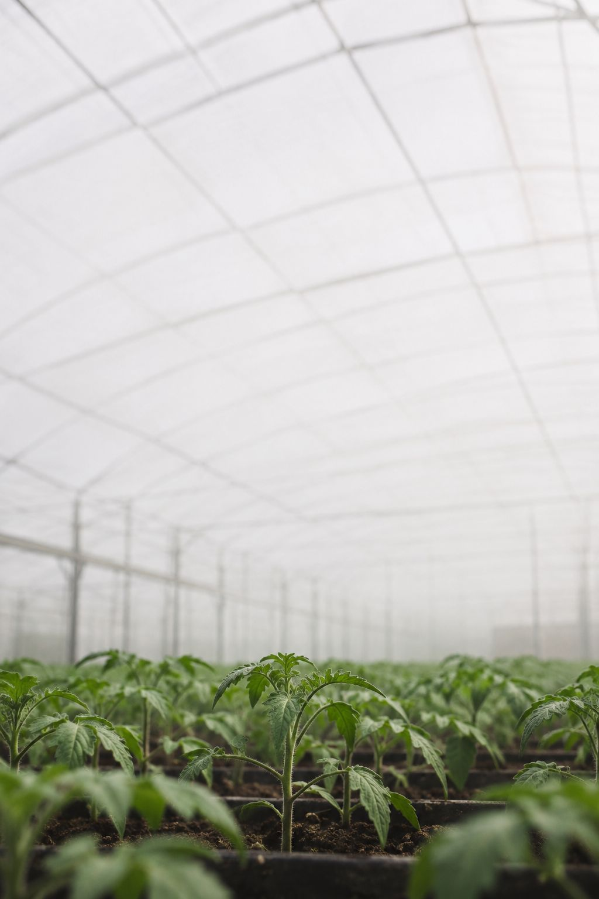
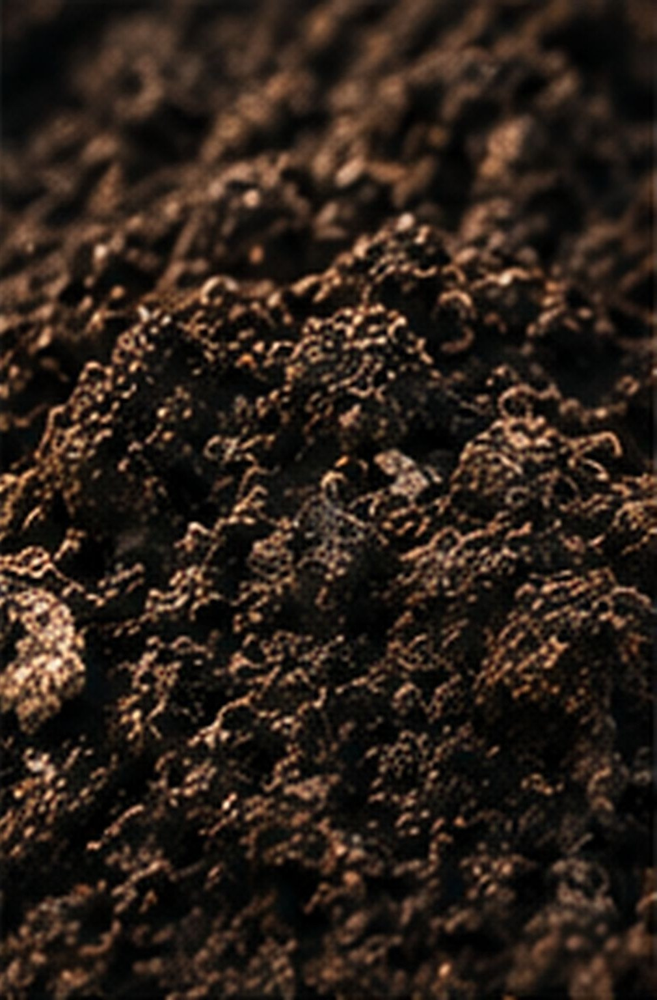
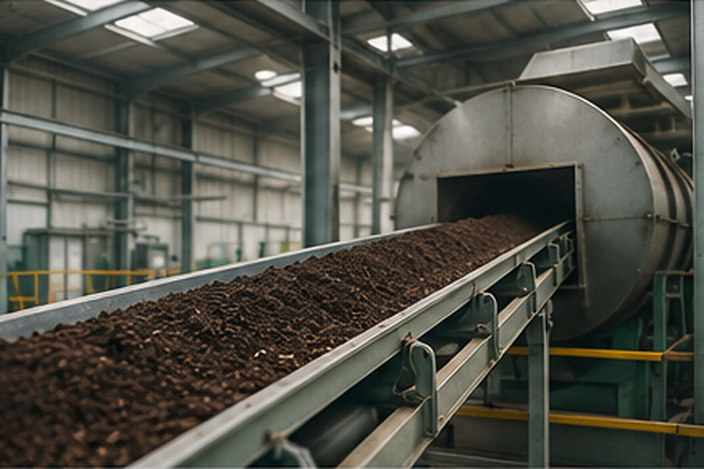
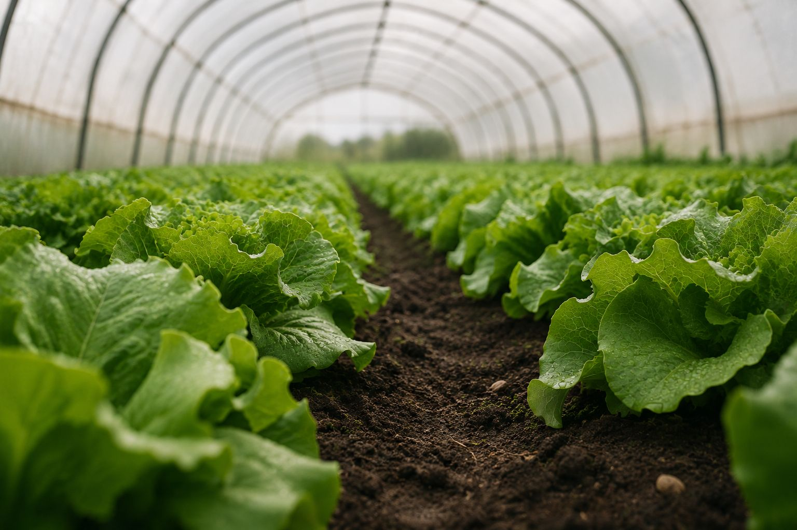
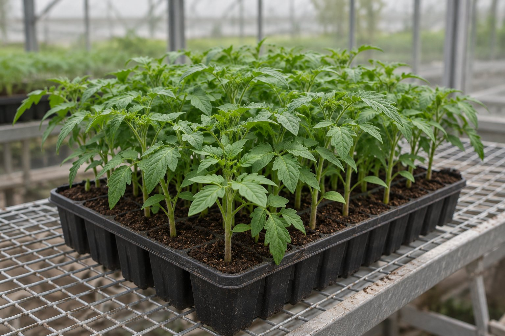
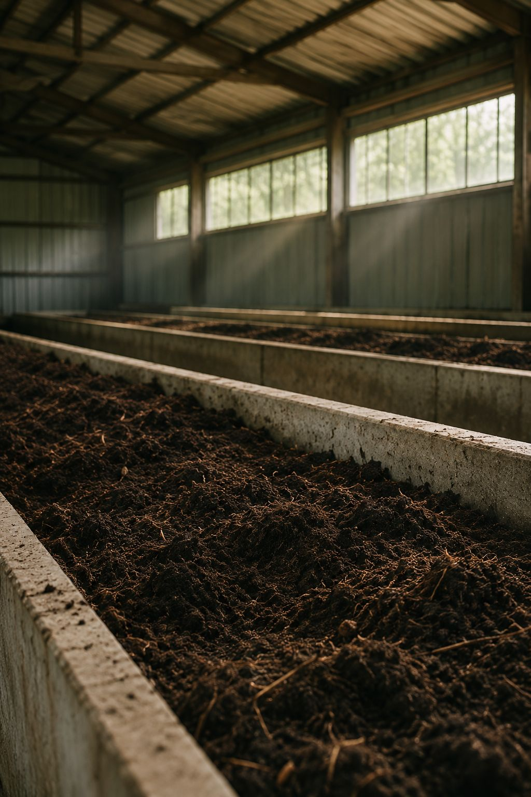

Veselīga augsne
sākas šeit.

Biohumuss profesionāliem audzētājiem. Latvijā to ražo Kalifornijas sarkanās sliekas, un mēs to piegādājam visā ES.
Viss sākas zem zemes.
Tas, kā augs aug virs zemes, ir atkarīgs no tiem dažiem centimetriem, kuros tas iesakņojas. Worming ražo vienu materiālu tieši šim slānim.

Biohumuss profesionāliem audzētājiem
- Produkts
- Beramais biohumuss jeb vermikomposts. Tikai viens, tīrs produkts.
- Kā tas top
- Kalifornijas sarkanās sliekas pārstrādā kūtsmēslus, dārzeņu atliekas un lapas.
- Ko saņemat
- Tumšu, melnzemei līdzīgu materiālu bez smakas.
- Kā pārdodam
- Pēc individuāla piedāvājuma, ar piegādi no Latvijas visā ES.
Četri veidi, kā to izmanto audzētāji.
To lieto nelielos daudzumos tur, kur kultūras vērtība ir augsta. Devas atšķiras atkarībā no kultūras un audzēšanas sistēmas, tāpēc katram pielietojumam ir savi ieteikumi.
-
Substrātu ražotāji
Organiska sastāvdaļa substrātiem ar samazinātu kūdras daudzumu.

-
Siltumnīcas un stādu audzēšana
Sējas un stādīšanas maisījumi dārzeņiem un dekoratīvajiem augiem.

-
Augļu dārzi un vīna dārzi
Stādīšanas bedrē, stādot jaunus kokus un vīnogulājus.

-
Bioloģiskie dārzeņu audzētāji
Dobju sagatavošanai un stādu izstādīšanai gan tuneļos, gan atklātā laukā.

Ar biohumusu un bez tā.
Tomātu stādi parastā substrātā un substrātā ar biohumusu. Pavelciet līniju un salīdziniet.


Katra partija ir dokumentēta.
Specifikācija ceļo kopā ar produktu. Šie ir rādītāji no mūsu pašreizējās produkta datu lapas.
- pH (KCl)
- 7,3
- Organiskās vielas
- min. 20,1 %
- Kopējais slāpeklis (N)
- 0,9 %
- Fosfors (P₂O₅)
- 0,9 %
- Kālijs (K₂O)
- 0,7 %
- Mitrums
- Tiks precizēts
- Sijāts līdz
- Tiks precizēts
- Uzglabāšana
- no −30 °C līdz +40 °C
Ražotājs: SIA „Worming”, Latvija. Sargāt no lietus un tiešiem saules stariem.

Ražots Latvijā: no izejvielām līdz big bag maisam.
Ģimenes uzņēmums, dibināts 2023. gadā Aucē. Visu procesu veicam vienuviet, tāpēc zinām, kas ir katrā kravā.
Izejvielas
Kūtsmēsli, dārzeņu atliekas un lapas.
Slieku dobes
Kalifornijas sarkanās sliekas pārstrādā materiālu.
Nogatavināšana
Pirms ievākšanas humuss nostāvas.
Sijāšana
Izsijāts līdz vienmērīgai, smalkai struktūrai.
Pārbaude
Salīdzināts ar specifikāciju.
Fasēšana
Safasēts un marķēts transportēšanai.
Kā notiek sadarbība.
Vispirms uzziniet cenu, tad izmēģiniet nelielā platībā un tikai pēc tam lemiet.

Pieprasīt piedāvājumu
Pastāstiet, ko audzējat un kāds apjoms nepieciešams. Saņemsiet cenu ar piegādi līdz jūsu saimniecībai.
Saņemiet paraugu
Nosūtīsim materiālu, lai varat to apskatīt un izmēģināt paši.
Veiciet izmēģinājumu
Viena siltumnīcas sekcija, dažas rindas vai viena substrāta partija, blakus atstājot neapstrādātu kontroli.
Pasūtiet un saņemiet
Piegādājam no Latvijas uz jebkuru vietu ES.
Ko audzētāji jautā.
Kāpēc izvēlēties Worming biohumusu?
Pērciet tieši no ražotāja par konkurētspējīgām cenām. Mēs paši kontrolējam visu ražošanas procesu, nodrošinām nemainīgu kvalitāti un drošas liela apjoma piegādes visā ES. Bez liekiem starpniekiem: laba cena, elastīgi apjomi un skaidra, ātra saziņa.
Ar ko tas atšķiras no komposta?
Kompostu karstā kaudzē noārda mikroorganismi. Biohumuss ir organiskā viela, ko pārstrādājušas Kalifornijas sarkanās sliekas, un rezultāts ir smalks, melnzemei līdzīgs materiāls bez smakas. Lielākā daļa audzētāju to lieto nelielos daudzumos kopā ar kompostu, nevis tā vietā.
Vai tas paaugstinās sāļu koncentrāciju substrātā?
Lielās devās var. Pārbaudiet gatavā maisījuma EC un, pirms maināt recepti, sāciet ar nelielu izmēģinājuma partiju.
Vai to drīkst lietot bioloģiskajā lauksaimniecībā?
Vermikomposts ir iekļauts Regulas (ES) 2021/1165 II pielikumā kā atļauts augsnes ielabotājs. Par savu saimniecību pārliecinieties savā sertifikācijas institūcijā.
Kā notiek piegāde?
Pēc piedāvājuma, no Latvijas uz jebkuru vietu ES. Iepakojumu, transporta izmaksas un piegādes termiņu apstiprinām katrā piedāvājumā.